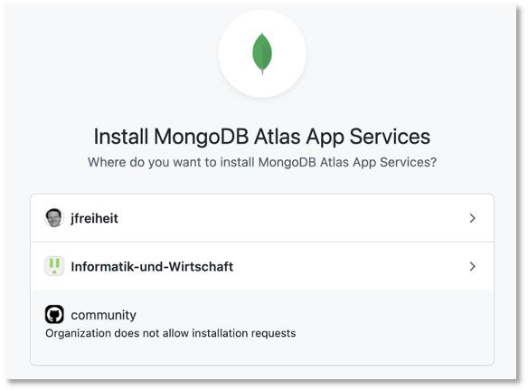

Deployment¶
Das in RxJS und Gurads erstellte Projekt zur einfachen Nutzerverwaltung soll hier deployed werden. Wir werden unterschiedliche Möglichkeiten des Deployments zeigen. Wichtig ist, dass wir das Frontend und das Backend jeweils unabhängig voneinander deployen.
Backend-Deployment mittels Render¶
Lange hatte Heroku ist eine kostenfreie cloud-basierte Plattform zum Betrieb von Applikationen bereitgestellt. Leider ist diese nun nicht mehr (ganz) kostenfrei. Insbesondere müssen Sie nun, selbst bei kostenfreier Nutzung von Heroku eine Zahlungsmethode hinterlegen. Dasselbe gilt für die AWS Cloud. Damit entfallen diese Möglichkeiten für uns. Aber es gibt Render und dort ist zum Glück die kostenfreie Nutzung (auch ohne Zahlungsmittel zu hinterlegen) möglich. Allerdings muss man sich registrieren, kann dafür aber auch den GitHub-Account (oder GitLab oder Google) nutzen. Nach dem Einloggen in Render erscheint folgendes Dashboard:
Eigenes Backend-Repository¶
Wichtig ist, dass Sie Ihr Backend in einem eigenen Repository haben, damit Sie explizit auf das Backend verweisen können. Das heißt, Ihr Repository auf Github (Sie können auch GitLab wählen) sollte ungefähr so aussehen:

Achten Sie darauf, dass Sie .env, /node_modules und package-lock.json in die .gitignore eingetragen haben. Sollten Sie z.B. die .env-Datei committed haben, ehe Sie sie in die .gitignore eingetragen hatten, können Sie sie mit git rm --cached .env aus dem Git-Tracking entfernen.
Klicken Sie nun im Render-Dashboard in der Karte Web Services auf den Button New Web Service. Es erscheint ein Formular Create a new Web Service. Tragen Sie in das Eingabefeld unter Public Git repository die URL zu Ihrem Repository ein, z.B. so:

Klicken Sie auf Continue. Füllen Sie das folgende Formular aus, z.B. so:

Als Build command können Sie ruhig yarn lassen. Wählen Sie als Instance Type Free und klicken unten auf Create Web Service. Es kommen noch Fehler, da Sie noch keine Environment-Variablen gesetzt haben (die ja in der .env-Datei stehen, die nicht in Github hochgeladen wurde) . Fügen Sie deshalb unter Environment die Umgebungsvariablen aus der .env-Datei hinzu oder laden Sie dort Ihre .env-Datei hoch:

Sie können dann jederzeit Manual Deploy auswählen und darin Clear build cache & deploy. Prinzipiell sollte der Build-Prozess dann durchlaufen, allerdings endet er mit
Server started and listening on port 3000 ...
und nicht mit der Ausgabe, dass sich auch mit der MongoDB im Cloud-Atlas verbunden wurde. Dazu sind zunächst weitere Schritte notwendig.
MongoDB Cloud Atlas vorbereiten¶
Wenn Sie MongoDB Atlas verwenden, dann muss für diese ein App Service als eine Github Application installiert werden. Loggen Sie sich dazu in der Webanwendung von MongoDB Atlas ein und wählen Sie für Ihren cluster unter Manage den Menüeintrag Deployment:

Klicken Sie auf den Link Install App Services on GitHub unter Schritt 1 der Anleitung. Es öffnet sich ein GitHub-Tab im Browser und Sie können auswählen, dass für Ihre Repositories der MongoDB Atlas App Service installiert werden soll.

Nach Auswahl erscheint

Wechseln Sie zurück in das Render-Dashboard und geben Sie dort nun auch noch die Umgebungsvariablen username und password an. Die Werte dazu können Sie der DB_CONNECTION-URL entnehmen, also mongodb+srv://<username>:<password>@cluster0.g3nbd.mongodb.net. Wenn Sie nun erneut Manual Deploy auswählen und darin Clear build cache & deploy, dann erscheint
Server started and listening on port 3000 ...
connected to DB
und die Verbindung zu MongoDB Atlas wurde hergestllt. Die URL des Backends finden Sie links oben im Render-Dashboard:
In diesem Fall aus der Abbildung also https://userbackend-cvf9.onrender.com. Nun können wir beispielsweise mithilfe von Postman alle Endpunkte probieren, also z.B. GET https://userbackend-cvf9.onrender.com/users:
wenn bereits Daten in der Datenbank enthalten sind.
Das Backend wird übrigens immer neu deployed, sobald neue Daten in das GitHub-Repo committed und gepusht wurden, da oben in den Einstellungen des Deployments Auto-Deploy auf Yes gesetzt wurde.
Wurden 30 Minuten keine Requests an das Backend geschickt, schickt Render die Anwendung in den Schlafmodus. Es dauert dann eine Weile, ehe ein weiterer Request beantwortet wird.
Ähnlich (fast genauso) wie bei Render funktioniert der gesamte Deployment-Prozess auch mit Railway. Eine detaillierte Beschreibung dazu finden Sie hier.
Frontend-Deployment als GitHub-Pages¶
Prinzipiell wird ein Angular-Projekt mithilfe des Befehls
ng build
deployed. Dadurch entsteht im Projektordner ein Ordern dist/<projektname>. Dieser Ordner enthält die index.html sowe einige .js-Dateien und eine css-Datei. Es handelt sich nun um eine statisches Projekt, welches einfach durch den Aufruf der index.html gestartet werden könnte, wenn nicht aufgrund der CORS policy das Laden der .js-Datein unterbunden wäre. Außerdem müssen wir noch beachten, dass der Zugriff auf das Backend immer mit localhost:3000 (oder einer leicht abweichenden baseURL) implementiert wurde. Dies muss ebenfalls angepasst werden.
Eigenes Frontend-Repository¶
Wichtig ist, dass Sie Ihr Frontend in einem eigenen Repository haben, damit Sie explizit auf das Frontend verweisen und dieses separat deployen können. Wenn Sie Ihr Angular-Projekt mithilfe der Angular CLI (also mithilfe von ng new) erstellen, dann wird auch automatisch ein .git-Ordner angelegt, d.h. das Projekt ist unter Git-Verwaltung. Sie müssen dann nur noch ein GitHub-Repository (am besten, ohne dort bereits eine Readme.md-Datei anzulegen, sonst haben Sie gleich einen Konflikt) erstellen und das Projekt-Repo mit dem Github-repo verbinden. Wie das geht, steht dann bereits auf der ersten Seite in GitHub sobald Sie das Repo dort erstellt haben. Die .gitignore-Datei ist durch die Angular CLI ebenfalls bereits gut configuriert.
Angular-Projekt Environments¶
Derzeit haben wir nur die development-Environment von Angular verwendet und z.B. als baseURL für den Zugriff auf das Backend localhost:3000 o.ä. angegeben. Wir wollen nun unterscheiden, ob wir noch in der Entwicklung oder bereits in der Produktion sind. Dazu konfigurieren wir eine Environment für unser Projekt. Im Angular-Projekt geben wir ins Terminal dazu
ng generate environments
ein. Sollte die Eingabe einen Fehler erzeugen, dann ist Ihre Angular CLI zu alt. Sie sollten dann ng update @angular/cli @angular/core ausführen. Danach klappt ng generate environments.
Es wird ein Ordner /src/environments erstellt, in dem zunächst 2 Datein sind environment.development.ts und environment.ts. Sie können diesem Ordner weitere Dateien hinzufügen, wenn Sie weitere Umgebungen konfigurieren wollen. Wir belassen es bei diesen beiden Dateien, da wir in der environment.development.ts die Entwicklungsumgebung beschreiben können und in der environment.ts die Produktionsumgebung.
Die beiden Datein konfigurieren wir zunächst so:
export const environment = {
production: true,
apiUrl: 'https://userbackend-cvf9.onrender.com'
};
export const environment = {
production: false,
apiUrl: 'http://localhost:3000'
};
Nun binden wir die environment.ts in unseren Service ein, in dem wir die apiUrl nutzen wollen:
1 2 3 4 5 6 7 8 9 10 11 12 13 14 15 16 17 18 19 20 21 22 23 24 25 26 27 28 29 30 31 32 33 34 35 36 37 38 39 40 41 42 43 44 45 46 47 48 49 50 51 52 53 54 55 56 57 58 59 60 61 62 63 64 65 66 67 68 69 70 71 72 73 74 75 76 | |
Wenn nun ng build ausgeführt wird, dann wird die environment.ts importiert und der dort hinterlegte Wert für die apiUrl verwendet. Wenn wir jedoch ng build --watch --configuration development ausführen, dann soll die environment.development.ts verwendet werden. Dazu erweitern wir die package.json um ein fileReplacement. Darin geben wir an, dass für die configuration development die Datei environment.ts durch die environment.development.ts ersetzt werden soll.
1 2 3 4 5 6 7 8 9 10 11 12 13 14 15 16 17 18 19 20 21 22 23 24 25 26 27 28 29 30 31 32 33 34 35 36 37 38 39 40 41 42 43 44 45 46 47 48 49 50 | |
Wenn wir nun das Projekt mithilfe von ng build --watch --configuration development compilieren, dann werden alle notwendigen Dateien in den dist/<projektname> Ordner übersetzt. Schauen wir uns dort die main.js an, dann finden wir
1173 1174 1175 1176 1177 1178 1179 1180 1181 1182 1183 1184 1185 1186 1187 1188 | |
Wenn wir aber das Projekt mithilfe von ng build compilieren, dann werden ebenfalls alle notwendigen Dateien in den dist/<projektname> Ordner übersetzt. Dann steht dort in der main.js aber
1173 1174 1175 1176 1177 1178 1179 1180 1181 1182 1183 1184 1185 1186 1187 1188 | |
Deployment bei Vercel¶
Das Deployment des Angular-Projektes ist dann sehr einfach. Committen und pushen Sie Ihr Projekt nach Github. Loggen Sie sich mit Ihrem Github-Account bei Vercel ein. Verbinden Sie Ihr Repository mit Vercel, installieren Sie die Vercel App bei Github und voilà: hier erreichbar unter https://userfrontend-one.vercel.app/:

mit allen (CRUD-)Funktionalitäten. Sowohl Backend als auch Frontend sind nun permanent und für alle verfügbar. Detaillierte Informationen zum Deployment von Angular Projekten finden Sie hier und hier.
Success
Wir haben unsere Webanwendung nun permanent und öffentlich verfügbar gemacht. Das Backend und das Frontend wurden jeweils deployed und werden von einem öffentlichen Dienst betrieben.